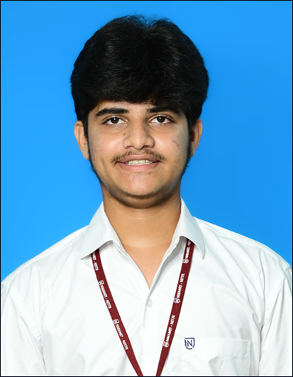

About Me
Hi, I’m Sambhram , a B.Tech student at NMAMIT, Nitte, passionate about coding, web development, and problem-solving. I enjoy creating simple yet impactful digital solutions — from building projects like Read House, a book shopping website, to exploring new technologies that challenge my skills.
Beyond academics, I like doodling and experimenting with creative ideas, which often influence my approach to design and development. I’m also interested in trading and tech communities, where I can learn, collaborate, and grow.
My goal is to become a skilled developer who can blend technical expertise with creativity to craft meaningful digital experiences.